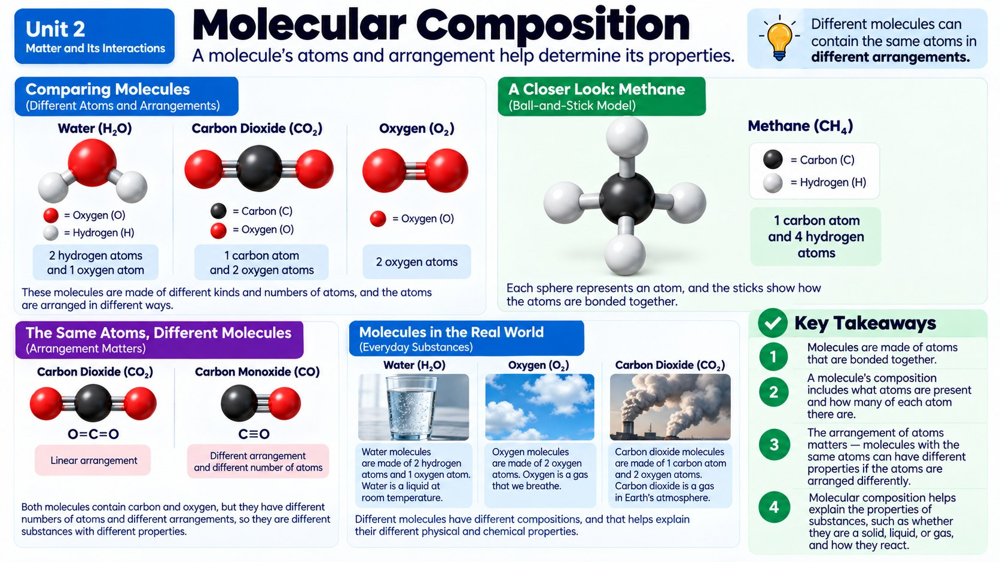

You pour two clear, harmless-looking liquids into the same cup and the mixture suddenly turns freezing cold and starts fizzing - what could possibly be happening down at the level of atoms and molecules to cause that?

Zooming In: What Is Stuff Actually Made Of?
Grab any object near you right now - your pencil, your water bottle, the air you're breathing - and imagine zooming in past what your eyes can see, past what even the strongest microscope can see, all the way down to the particles it's built from. What you'd find is surprisingly varied. A gold ring is made of nothing but gold atoms, sitting shoulder to shoulder in a repeating pattern. The oxygen you just inhaled is made of molecules - two oxygen atoms bonded together as O2, like a matched pair holding hands. Diamond is carbon atoms, but instead of pairing up, they link into a giant, repeating 3D framework that never really ends.
Things get even more interesting when different kinds of atoms team up. Water is a molecule made of two different elements bonded together - two hydrogen atoms and one oxygen atom, forming H2O. Table salt takes this idea even further: it's not really made of individual salt molecules floating around. Instead, sodium and chlorine ions stack together into a giant, repeating crystal pattern, alternating over and over in a 3D grid, kind of like a perfectly organized game of checkers stretched into three dimensions.
So before we even talk about mixing anything, it helps to remember that every substance already has its own "molecular identity" - whether it's a single element standing alone, a small molecule of a few bonded atoms, or a sprawling crystal lattice. That identity is exactly what determines how a substance is going to behave once things start getting mixed together.
It's worth pausing on a common mix-up here: none of this means atoms are "used up" or disappear when substances mix or react. A spoonful of sugar stirred into water doesn't lose any sugar atoms - they're still there, just spread out among water molecules instead of clumped into solid crystals. Whether atoms are locked in a lattice, paired into a molecule, or dissolved into a solution, they're always still present somewhere in the system.
Before You Mix: Taking Each Substance's Fingerprint
Imagine a scientist lines up a row of unlabeled powders and liquids on a lab bench. Before mixing anything, the smart move is to study each one alone first, almost like taking its fingerprint. Is it a white powder or a clear liquid? Does it have a smell? What's its density (how much mass is packed into a given volume)? At what temperature does it melt or boil? These are all physical properties - features you can observe or measure without turning the substance into something else.
This step matters more than it might seem. Baking soda, for example, is a fine white powder with basically no smell, and it doesn't dissolve in oil. Vinegar is a clear, sharp-smelling liquid. If you only ever saw them combined, you'd have no way of knowing what each one was like on its own - and no way of noticing that anything unusual happened when they met.
Recording this baseline data - density, melting point, boiling point, odor, color, texture - gives scientists something to compare against later. It's the "before" picture in a before-and-after story, and in chemistry, that comparison is everything.
The Big Mix: Hunting for Patterns
Now comes the fun part - actually combining substances and watching closely. Sand stirred into water still looks and behaves like sand and water; you can even filter them back apart. But drop baking soda into vinegar and something dramatic happens: bubbles erupt, the container feels colder to the touch, and if you let it dry out, you're left with a residue that isn't baking soda or vinegar. The properties changed. That's a strong clue that the atoms didn't just mingle - they rearranged into new substances entirely.
Scientists look for patterns across many combinations: Does the new mixture have a different density than either starting ingredient? A different smell? Does it boil or melt at a new temperature? When several of these physical properties shift at once, especially alongside bubbles, color changes, or temperature swings, it's a signal that a chemical reaction - not just a physical mixture - has taken place.
Feeling the Heat (or the Cold): Exothermic vs. Endothermic
Here's something else worth tracking when substances react: what happens to the energy. Some reactions release thermal energy into their surroundings, making things feel warmer - these are called exothermic reactions. Think of a crackling campfire, or the calcium chloride packs hikers use as instant hand warmers. Other reactions do the opposite: they pull thermal energy in from their surroundings, making things feel colder. These are endothermic reactions, like the ammonium chloride packets in an instant cold pack that athletes snap onto a twisted ankle.
Even the speed of that energy change tells you something. A cold pack chills almost instantly, releasing (or in this case, absorbing) energy fast, while other reactions, like iron slowly rusting, absorb or release energy so gradually you'd never notice without careful measurement over days or weeks. Comparing how much energy changes, and how quickly, is one more powerful clue scientists use to understand exactly what a reaction is doing.
You can even put rough numbers on this. Picture two identical zip-top bags of chemicals, each starting at a comfortable 22°C. Snap the activator in an exothermic hand warmer, and a thermometer might climb to 54°C within a minute. Snap an endothermic cold pack instead, and that same thermometer might plunge to 3°C almost immediately. Neither bag gains or loses any mass in the process - the chemicals inside simply rearrange into new substances, and the energy released or absorbed by that rearrangement is exactly what changes the temperature you feel in your hands.
Worked Example: Solving the Fizzy, Freezing Mystery
Let's revisit the mystery from the start of this chapter: two clear liquids that turn ice-cold and start fizzing the instant they're combined. Imagine a chemist mixes 50 grams of a citric acid solution with 50 grams of a baking soda solution, both starting at 22°C. The instant they touch, bubbles of carbon dioxide gas stream upward, and a thermometer dipped into the mixture drops to 9°C within thirty seconds.
What does that tell us? The bubbles are a dead giveaway that a new substance, a gas, is forming that wasn't in either starting liquid - a classic sign of a chemical reaction. The temperature drop tells us the reaction is endothermic, pulling thermal energy from the surrounding liquid. If you weighed the open container before and after, the mass would actually dip slightly, from 100 grams to about 98 grams, because some carbon dioxide escaped into the air as bubbles. That's an important preview: matter isn't disappearing, it's simply leaving the system as gas. Seal the same reaction in an airtight container, and the scale would read exactly 100 grams both times.
Real-World Connections
Designing New Medicines
Pharmaceutical chemists build molecules atom by atom, testing tiny changes in molecular structure to create medicines that fight specific diseases more effectively or with fewer side effects.
Table Salt's Crystal Structure
Ordinary table salt is a repeating 3D structure of sodium and chlorine atoms locked in a precise pattern, exactly why salt crystals always form the same cube-like shape.
Meet the Scientist
Pharmaceutical Chemists
Pharmaceutical chemists design and build new molecules with specific 3D shapes intended to interact with a particular protein or cell in the human body. Creating a single new medicine can take years of building and testing thousands of slightly different molecular models.
Key Vocabulary
Bold, underlined words in the reading above are clickable too. Tap one to see its definition pop out. Or click or tap a card below to reveal the definition.
Explore More
Chapter Review
1. Table salt (sodium chloride) is best described as which kind of molecular composition?
2. Before mixing two unknown substances, why do scientists first measure each one's properties separately?
3. Which observation would MOST strongly suggest that mixing two substances caused a chemical reaction rather than a simple physical mixture?
4. An instant cold pack gets noticeably colder the moment it's activated. What kind of reaction is happening inside it?
5. A diamond and a sample of oxygen gas (O2) are similar in one important way. What is it?
California Science Test (CAST) Practice
A student combines 50 g of Liquid A and 50 g of Liquid B in an open beaker at room temperature. Both liquids are clear and colorless before mixing. The table shows measurements taken before and immediately after mixing.
| Property | Before Mixing (A + B) | After Mixing |
|---|---|---|
| Temperature (°C) | 22 | 6 |
| Appearance | Two clear liquids | Clear liquid with bubbles |
| Total Mass (g) | 100 | 97 |
Which piece of evidence best supports the claim that a chemical reaction occurred when Liquid A and Liquid B were combined, rather than just a physical mixing of the two liquids?